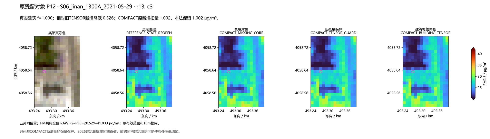
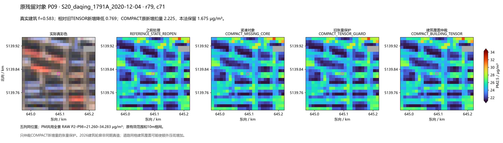
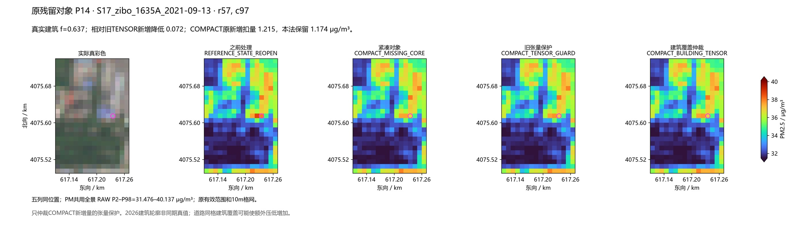
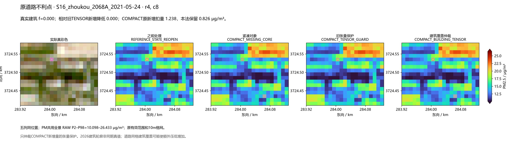
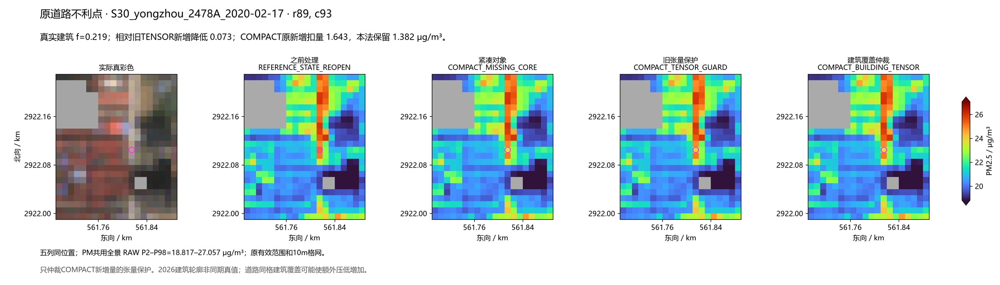
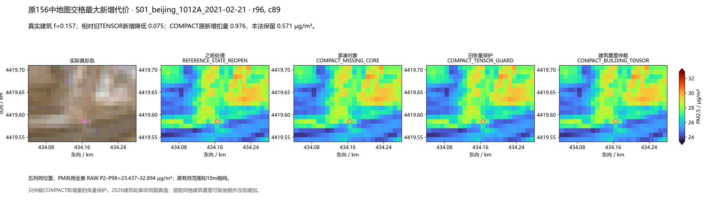
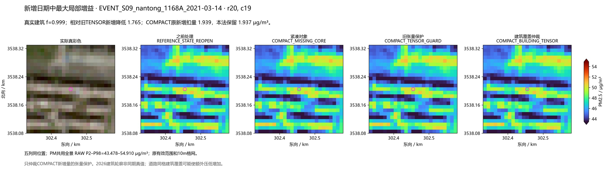
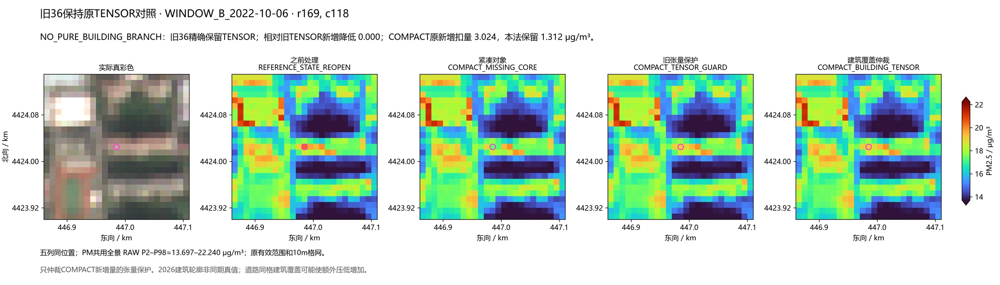

COMPACT_BUILDING_TENSOR：建筑覆盖限制张量过度保护 唯一预定候选，156原场＋50新增日期真实推理，0拟合。w=原tensor coherence×(1−真实建筑覆盖f)，只回退COMPACT相对REOPEN的新增可见光扣量。不是PM图融合；NIR、原valid、此前已处理格精确保留。 170场使用30址真实Overture union-cell覆盖，source/格网/输入f精确校验；旧36含扩展材料支持，明确不采用其f，逐值保持旧TENSOR。 原30对象平均新增降幅：COMPACT 0.909341 → TENSOR 0.491354 → 本候选 0.544909 μg/m³。相对TENSOR有7对象获得更多缓解，平均多降0.053555，最大0.696382。21个f=0对象精确不变，此机制不修漏轮廓。 全4171个COMPACT原变化格中，本候选仍退回31.74%扣量；只有已有建筑覆盖的部分格恢复更多COMPACT处理。建筑代理组退回比例15.71%；该代理本身含f条件，不能解释为独立道路/屋顶分类准确率。 代价：原231地图交格有14格相对TENSOR再次降低，最大0.075304；新增日期106交格中5格，最大0.043548。永州建筑/道路混合格仍是风险；周口f=0不变。旧36固定道路/工业ROI相对TENSOR精确不变，不能把这一设计性不变称新工业收益。 四季全输入小亮区每场平均额外降低0.001896，50事件每场0.002777 μg/m³：全图收益仍很小。站窗和25事件误差没有实质改善，详EVALUATION_SUMMARY；局部降幅不等于真实像元精度。 八图同时展示固定残留、道路代价、最大增益和旧36不变。不改变色限或mask；原全景RAW P2–P98统一用于同场所有PM面板。







